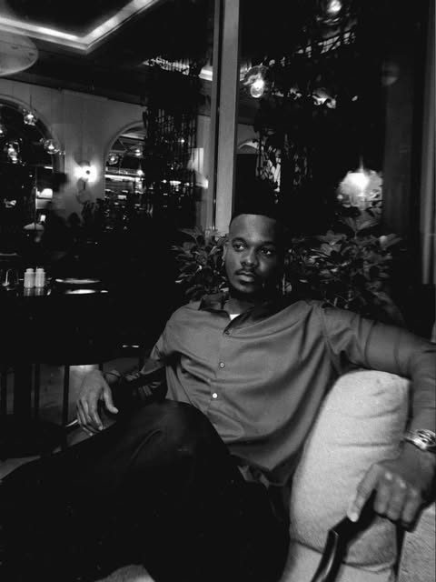
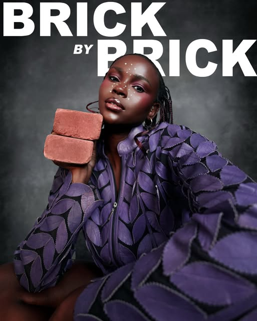
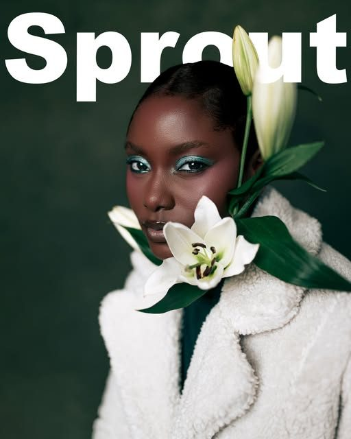
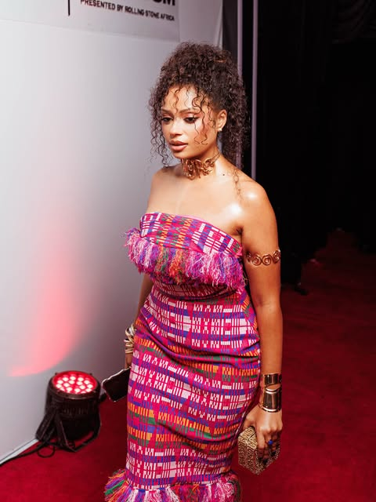
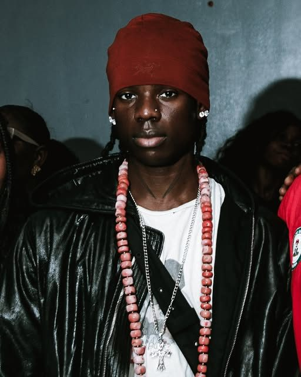
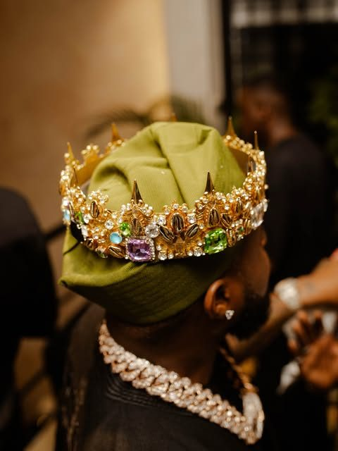
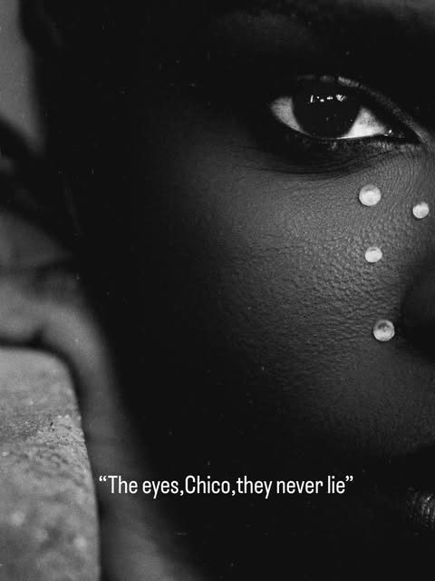

Luxury Lifestyle & Editorial Photography
Photography by Walter — storyteller, visionary, chef of light.
View the Portfolio
The Artist
Walter is the lens behind Zuwa Production — a storyteller building imagery for the boldest names in fashion, music and culture. From intimate portraits to full-scale editorial productions, every frame is composed with the same obsession: light, story, and soul.
Every shoot is a collaboration in trust. Walter doesn't just capture a moment — he builds a world around his subject, then waits for the truth to surface.
Selected Work
A collection of portraits, editorials and stage moments — each one an exercise in atmosphere.






“The eyes, Chico — they never lie.” — Walter, on the art of the portrait
Trusted By
A decade of lending Zuwa's eye to the world's most recognized names — from spirits to streaming, skincare to sport.
& a growing list of brands, labels and publications worldwide.
What Zuwa Offers
Concept-driven shoots built around wardrobe, set and story — magazine-ready from first frame to final retouch.
Considered, confident portraits for artists, executives and public figures who want to be seen as they truly are.
High-energy coverage of concerts, red carpets and events — precision timing, cinematic light.
Campaign imagery and content that gives brands a visual identity worth remembering.